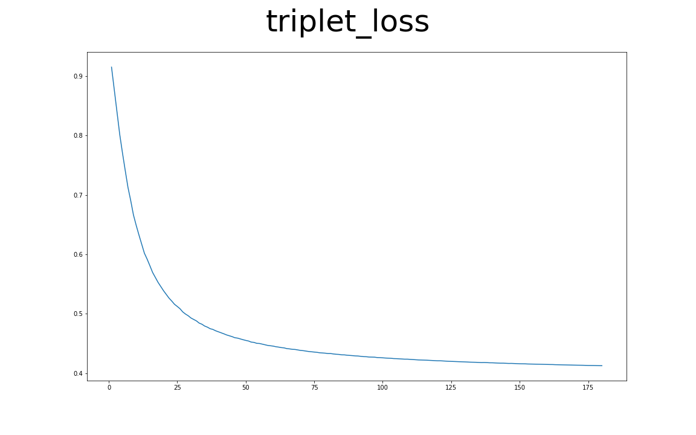
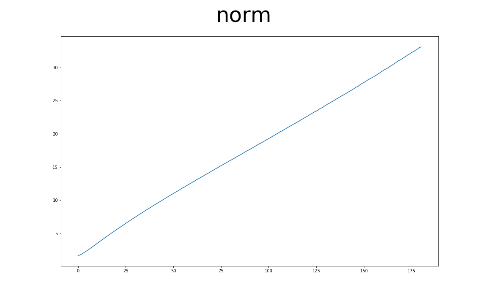

前言
Triplet Loss在FaceNet那篇論文中，主要是要讓屬於相同一個人的人臉圖片在一個Latent Space中越靠近越好，而讓不屬於這個人的人臉在這個Latent Space中遠離這個人，在這裡我使用MNIST資料集來取代人臉資料，將具有相同類別的手寫圖片彼此聚在一起，讓不同的數字之間有一定的差距。
以下的內容為個人理解，如有其他見解歡迎留言討論～
前處理和類神經網路
首先先定義出MNIST資料要如何使用，再來設計類神經網路，最後將網路和Optimizer使用到實際的訓練過程上。
資料集 & 網路架構
這邊使用Tensorflow的程式碼直接將MNIST的資料load進來，再將資料normalize到-1到1之間：
1
2
3
4
5
6
7
8
9
10
11
12
13
14
15
16
| import tensorflow as tf
from tensorflow.keras.datasets.mnist import load_data
from args import parser
opts = parser()
[(train_x, train_y), (test_x, test_y)] = load_data('mnist.npz')
test_x = test_x.reshape(test_x.shape[0], 28, 28, 1).astype('float32')
test_x = (test_x - 127.5) / 127.5
train_images = train_x.reshape(train_x.shape[0], 28, 28, 1).astype('float32')
train_images = (train_images - 127.5) / 127.5
train_dataset = tf.data.Dataset.from_tensor_slices((train_images, train_y))
train_dataset = train_dataset.shuffle(opts.BUFFER_SIZE)
train_dataset = train_dataset.batch(opts.BATCH_SIZE).take(20)
|
這邊簡單的用兩層CNN加上一層全連結層，並且在最後做一個l2 normalize，將embedding的範圍限制住，通常在做Triplet的時候，都會做l2 normalize讓經過Triplet Net之後的Vector限制在一個範圍內：
1
2
3
4
5
6
7
8
9
10
11
12
13
14
15
16
17
18
19
20
21
22
| import tensorflow as tf
from tensorflow.keras import Model, layers
class Triplet_Net(Model):
def __init__(self):
super(Triplet_Net, self).__init__(self)
self.emb_layer = tf.keras.models.Sequential([
layers.Conv2D(64, (5, 5), strides=(2, 2), padding='same'),
layers.LeakyReLU(),
layers.Dropout(0.3),
layers.Conv2D(64, (5, 5), strides=(2, 2), padding='same'),
layers.LeakyReLU(),
layers.Dropout(0.3),
layers.Flatten(),
tf.keras.layers.Dense(200)])
self.l2_norm = layers.Lambda(lambda x: tf.math.l2_normalize(x, axis=1))
def call(self, img, training=True):
vec = self.emb_layer(img)
vec = self.l2_norm(vec)
return vec
|
Triplet Net and Optimizer
將Triplet Net和Optimizer定義出來：
1
2
3
4
5
6
7
| method = 'semi_hard'
triplet_net = Triplet_Net()
TripletLoss = tfa.losses.TripletSemiHardLoss(margin=opts.margin)
optimizer = tf.keras.optimizers.Adam(opts.lr, opts.beta)
|
訓練過程
接下來就是將每個Epoch中如何計算loss和如何更新網路的過程定義出來，將訓練過程中各個參數記錄下來。
Each Epoch Training
定義每個Epoch訓練過程的function，在前面加上@tf.function可以讓原本Tensorflow的Eager mode編譯成Gragh的形式，通常這意味著可以執行的更快，這也是為什麼這邊紀錄loss跟norm需要用到tf.keras.metrics.Mean()來記錄，因為這邊只使用Tensorflow的物件的話，可以讓整體的速度提升：
1
2
3
4
5
6
7
8
9
10
11
12
13
14
| norm = tf.keras.metrics.Mean()
loss = tf.keras.metrics.Mean()
@tf.function
def train_step(images, label):
with tf.GradientTape() as tape:
trip_emb = triplet_net(images, training=True)
triplet_loss = TripletLoss(label, trip_emb)
loss.update_state(triplet_loss)
triplet_loss = tape.gradient(triplet_loss, triplet_net.trainable_variables)
optimizer.apply_gradients(zip(triplet_loss, triplet_net.trainable_variables))
norm.update_state(tf.norm(triplet_net.emb_layer(images, training=False), axis=1))
|
Whole Training Process
整體的訓練過程如下：
1
2
3
4
5
6
7
8
9
10
11
12
13
| def train(train_dataset):
for epoch in range(opts.epochs):
start = time.time()
for image_batch, label_batch in train_dataset.as_numpy_iterator():
train_step(image_batch, label_batch)
print(format_str.format(epoch+1,
norm.result().numpy(),
loss.result().numpy()))
norm.reset_states()
loss.reset_states()
|
Result
這邊會展示在訓練過程中紀錄的參數和經過Triplet loss訓練後整體Embedding的變化，分為Batch Hard跟Semi-Hard。
Batch Hard
只選擇最短的AN距離和最長的AP距離，詳細可以參考前一篇。
PCA-2d
使用PCA將各個Epoch中，從Triplet Net出來的200維度的資料降到2維的平面空間上：

PCA-3d
這邊則是在3維立體空間的示意圖：

Triplet Loss
每個Epoch中記錄的Loss的變化：

Loss會降低到margin，之後就不會再下降了，這是因為選擇的triplet例子都是最難的，而最難的則至少會包含margin，除非在整個Embedding中每筆資料都符合Triplet的定義(機率極低)，而此時loss會是0。
Norm
算Embedding Vector的各項平方和再開根號，這邊取的值是在經過l2_norm之前的Vector：

整個norm會逐步上升，這是因為經過Triplet Net的Vector各維度會逐步變大，好符合Tripelt Loss。
Semi-Hard
選擇AP到AP+margin之間的AN距離，來計算loss，詳細可以參考前一篇。
PCA-2d
使用PCA將各個Epoch中，從Triplet Net出來的200維度的資料降到2維的平面空間上：

PCA-3d
這邊則是在3維立體空間的示意圖：

Triplet Loss
每個Epoch中記錄的Loss的變化：

Norm
算Embedding Vector的各項平方和再開根號，這邊取的值是在經過l2_norm之前的Vector：

可以看到norm在降低之後逐步變高，這是因為一開始選擇的例子可以透過些微的調整而讓各個資料符合tirplet的定義，而後調道不能再調的時候，只好發散整個Embedding讓norm越來越大，這也是為什麼需要在Triplet Net後面加上l2 norm的原因。
結論
透過PCA降維到2維或是3維，可以看到Semi-Hard的效果好得多，個人猜測因為Batch Hard只選擇最難的例子導致在訓練過程中所看見的資料太少，也可以說最難的資料無法代表那個Batch中的資料。
Github：NeuralNetwork-02 Triplet Loss Example at MNIST